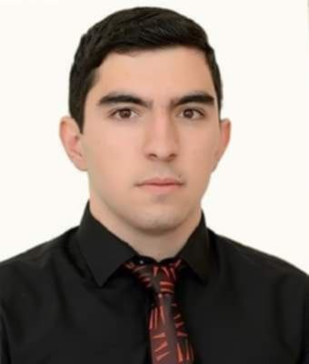
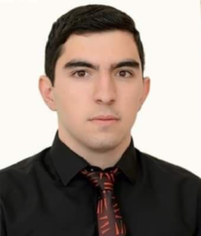

რაზმიკ კარენის ტანდილია დაიბადა 2001 წლის 6 ივლისს ლორის რეგიონში, ჰաղპატის სოფელში. 2007-2019 წლებში სწავლობდა ჰաղპატის საჯარო სკოლაში. უყვარდა ქართული ისტორია და რუსული ენა. მას უსურვებდნენ მასწავლებლები და მასთან ერთად სიხარულით სწავლობდნენ თანატოლები, რადგან იგი იყო ძალიან სასაცილო, მეგობრული და საიმედო.
2019 წელს, სკოლის დამთავრების შემდეგ, შევიდა საქართველოს ეროვნულ პოლიტექნიკურ უნივერსიტეტში. თუმცა, მხოლოდ ოთხი თვის შემდეგ, 2020 წლის 15 იანვარს გაიგზავნა არმიაში. მსახურობდა ჰადრუტში, იყო გუშაგი. არასოდეს ჩიოდა. როცა დედამისი ეკითხებოდა, ყოველთვის პასუხობდა: "ყველაფერი კარგადაა, ჩვენ ყველა აქ ვართ."
თუმცა, ცხრა თვის შემდეგ დაიწყო 44-დღიანი ომი. 27 სექტემბრის დილით ისინი გაიყვანეს ფრონტზე. 4 ოქტომბერს გადაიყვანეს სერჟანტის გამტარებზე. მისი თანამებრძოლების თანახმად, იგი იბრძოდა ნამდვილ გმირთა ღირსებით. უწყვეტი ცეცხლის შედეგად მისი ავტომატი გამოვიდა ექსპლუატაციიდან. მოითხოვა ახალი.
7 ოქტომბერს დედასთან ბოლო საუბრისას, მან დაამშვიდა: "არ არის არაფერი საშიში, ყველაფერი მშვიდია". მამას უთხრა: "თქვით, არავინ მოდის სოფლებიდან, მე ყველა მათგანის მაგივრად ვიბრძოლებ." როდესაც ძმამ ჰკითხა: "Türk-ები შემხვედრი თუ არის?" პასუხობდა: "რაც გინდა, მაგდენია". როდესაც ძმამ ჰკითხა: "დადგა თუ წევს?" რაზმიკმა იცინოდა და პასუხობდა: "დადგომა, წევს ჩამოვწევ!"
რაზმიკი დაიღუპა 9 ოქტომბერს, სერჟანტის გამტარებზე უსაფრთხოების უზრუნველსაყოფად არტილერიული დარტყმის დროს.
მამაპაპების სკოლაში ჰაღპატის ეზოში მშენებლობა აშენდა მისი სახელი და განათლებული წყალი, ხოლო სოფლის გზაზე შედგა მემორიალური ქვა. სოფელში რაზმიკისა და ყველა დაღუპული გმირის მეხსიერების დალოცვა დაამტკიცა.
ერთ-ერთი მისი თანამებრძოლი ამბობს, რომ რაზმიკი იყო "მომენტით გულის ადამიანი" ... მამა ხშირად იხსენებს ერთ-ერთ საუბარს, რომელიც მოიგვარდა მასთან, როდესაც გაიგო, რომ ის არ სურდა არმიაში მისვლა, რაზმიკმა უპასუხა: "თუ არ წავიდე, ვინ წავა?"
მას შემდეგ, რაზმიკი ამქვეყნიური ჯილდოს მოიპოვა კავშირისა სახელმწიფოს პრეზიდენტისგან "ომის სერვისისთვის" მედლით, ეროვნული სტუდენტური საბჭოსგან "გმადლობთ" მედლით და პირველი ბრძოლითი ხვედრის მიერ "ჰოვჰანეს ტუმანიანი" და "ომი სჯილდო" მედლებზე.
რაზმიკი სკოლაში შექმნილი იყო. მას აქვს რამდენიმე ათეული წერილი. მისი მშობლიური უნივერსიტეტის მხარდაჭერით გამოიცა რაზმიკის წიგნი სახელწოდებით "გულიდან პოეტური ხაზები".